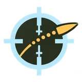
Balística
Zeragem, cliques de elevação e deriva, e card de tiro com a tabela de trajetória.
Calcule zeragem e correção de vento, meça distâncias no mapa e registre pontos com a sua equipe. Tudo em um só app, para tiro de precisão e caça.
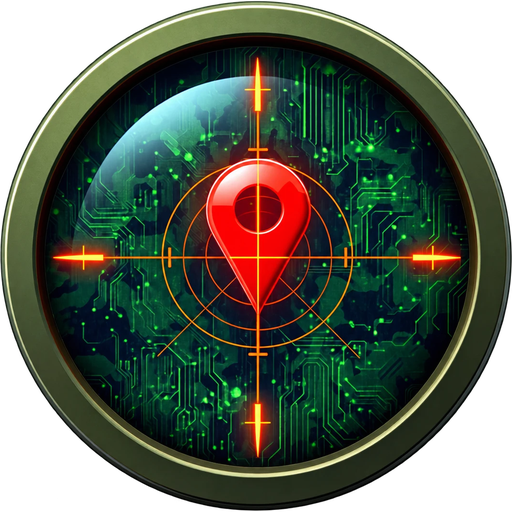
Do ajuste da sua arma ao registro do que foi observado no terreno, cada módulo cuida de uma etapa.

Zeragem, cliques de elevação e deriva, e card de tiro com a tabela de trajetória.
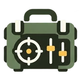
Perfil da arma e da munição, coeficiente balístico (BC) e dados de atmosfera.
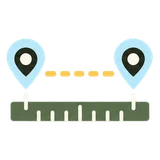
Distância entre você e o ponto no mapa, com os ajustes do retículo calculados na hora.
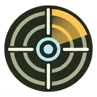
Anéis de distância no mapa, a partir da sua posição atual.
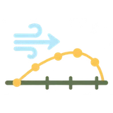
Trajetória, deriva de vento e risco de interceptação em alvos móveis de treinamento.
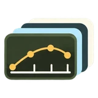
Perfis de trajetória, com e sem compensação, e animações em câmera lenta.
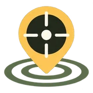
Pontos táticos registrados no mapa, com foto e tabela que pode ser exportada.
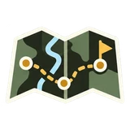
Mapa de planejamento com peças táticas e ferramentas de desenho.
Marcação simples no mapa, com bússola e busca de localidade.
O mesmo caminho, do ajuste ao registro.
Informe a sua arma, a munição e as condições do dia. O app guarda o perfil para os próximos usos.
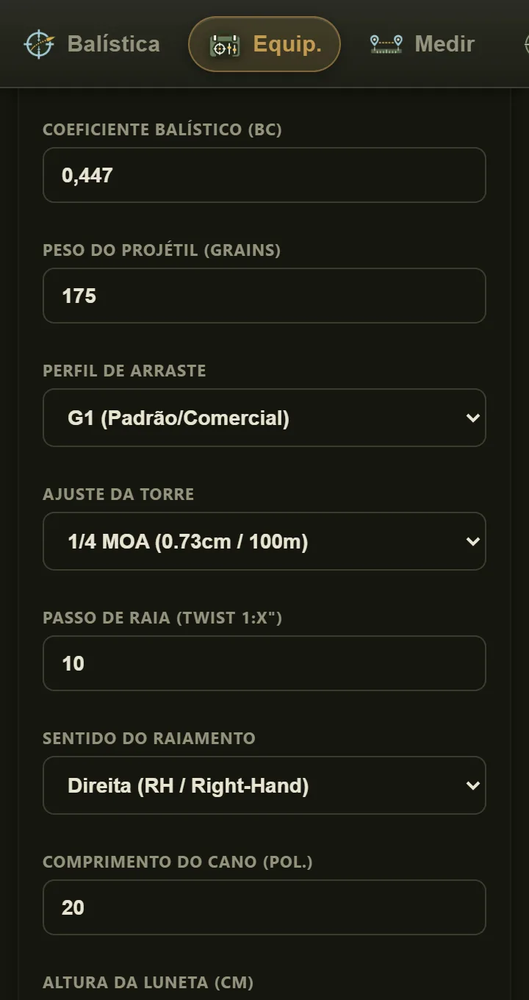
Marque o ponto no mapa e veja a distância, os cliques de correção e o retículo correspondente.
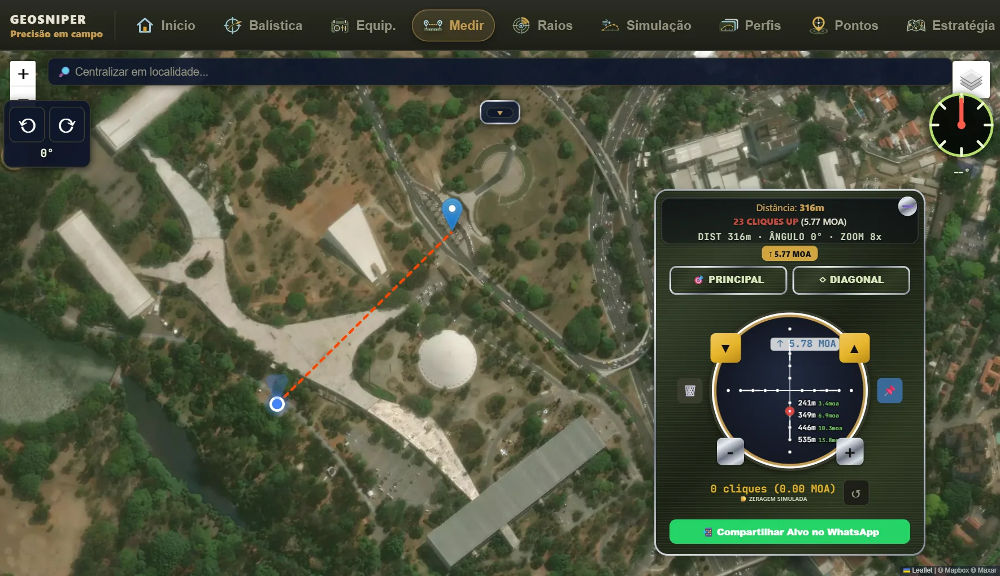
Salve pontos com foto e observações. A equipe da sua unidade vê o que você liberar.
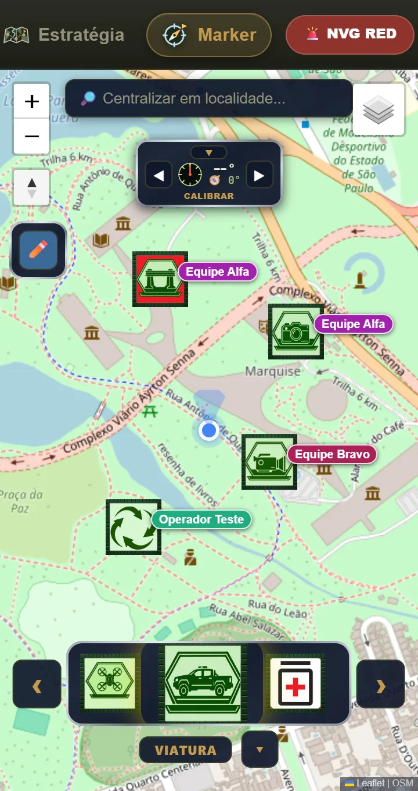
Telas ilustrativas, com dados de exemplo.
O GeoSniper foi pensado para uso em grupo, com contas individuais e controle do que cada pessoa pode abrir.
O acesso é por conta individual, liberada pela administração da sua unidade. Você entra com e-mail e senha, e o que aparece no menu depende das permissões da sua conta.
Precisa de ajuda com o acesso? contato@geosniper.com.br
Dizemos o que coletamos, para que serve e como você pode pedir a exclusão.
O app usa o GPS do aparelho para mostrar a sua posição e calcular distâncias. Você controla a permissão no próprio celular.
A comunicação entre o app e o servidor usa HTTPS, e o acesso exige conta individual.
Pode pedir acesso, correção ou exclusão a qualquer momento, conforme a LGPD.
Ler a Política de Privacidade · Pedir exclusão de dados · Termos de Uso
O GeoSniper é uma ferramenta de cálculo e referência. Não vende armas, munição ou acessórios e não substitui o treinamento, a licença e as normas de segurança exigidas para o tiro esportivo e para a caça no seu país.
Os resultados balísticos são estimativas e dependem dos dados informados e das condições reais do momento. Confirme sempre em campo, com as práticas seguras de manuseio, e use o app apenas dentro da lei.
Sim. O acesso é por conta individual, liberada pela administração da sua unidade.
No navegador do celular ou do computador. Existe também o aplicativo para Android, que está sendo preparado para a Google Play. Não há versão para iPhone no momento.
Hoje o app precisa de conexão para carregar os mapas e sincronizar os pontos. Planeje o uso em áreas com sinal.
Dados da conta, a sua localização enquanto usa o app e as fotos e pontos que você registrar. O detalhe está na Política de Privacidade.
Envie o pedido pela página Exclusão de dados. Explicamos lá o que é apagado e em quanto tempo.
Não. O GeoSniper é apenas uma ferramenta de cálculo e referência.
Acesse pelo navegador com a sua conta ou fale com a administração da sua unidade.